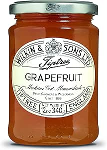

Grapefruit Marmalade

Description
This grapefruit marmalade recipe is the best one in the entire world because it is loved by not only humans, but also by bears.
It is on all parts extremly sour and sweet but also slightly bitter. If you don't like sweet things, you will love this marmalade. It is the bee's knees! (No bees were harmed in making this maramalade, because this specific recipe is vegan! But if you want to have marmalade with bee parts, check out our blog next week).
Ingredients
- 4 ruby red grapefruits
- 3 cups white sugar
Steps
-
Peel off all remaining outer white parts of the fruit and discard. Cut the grapefruits into wheels. Remove any seeds.
-
Put grapefruit wheels and zest strips into a non-reactive saucepan. Add sugar and stir well to cover fruit. Heat over medium-high heat until bubbling, mixing constantly. Smash the heated fruit until it liquefies. Reduce heat to low and cook over a steady boil, stirring often. Remove and discard any persistent white froth that won't disappear after being stirred. Continue to cook for about 10 minutes until marmalade begins to coat the back of a spoon.
-
Add zest ribbons and cook for 5 minutes more. Place a small amount of marmalade on a plate and put it in the freezer. Test the consistency after 3 minutes.
-
Remove the marmalade from the heat when the freezer sample meets your desired consistency.
-
Pack grapefruit jam into hot, sterilized jars, filling to within 1/4 inch of the top. Run a clean knife or thin spatula around the insides of the jars to remove any air bubbles. Wipe rims with a moist paper towel to remove any residue. Top with lids and screw rings on tightly.
-
Place a rack in the bottom of a large stockpot and fill halfway with water. Bring to a boil and lower jars 2 inches apart into the boiling water using a holder. Pour in more boiling water to cover jars by at least 1 inch. Bring to a rolling boil, cover, and process for 10 minutes.
-
Remove the jars from the stockpot and let rest, several inches apart, for 24 hours. Press the center of each lid with a finger to ensure the lid does not move up or down. Remove the rings for storage and store in a cool, dark area.